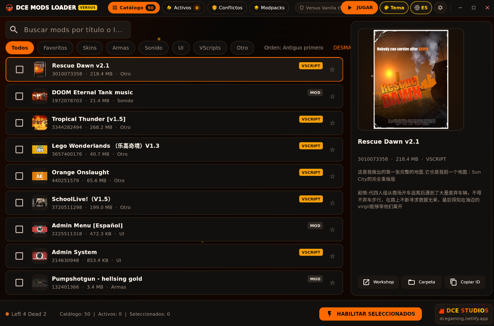

La suite definitiva y ultra-rápida para Left 4 Dead 2 que te permitirá usar cualquier addon de la Steam Workshop en modo Versus saltándote el bloqueo de consistencia sin modificar ejecutables y con cero riesgo de baneo.

Olvídate de comandos complejos, de esperar descargas repetidas o de sufrir duplicaciones de gigabytes en tu disco duro.
Utiliza enlaces simbólicos en Linux y enlaces duros (hardlinks) en Windows para inyectar tus addons directamente en la ruta de búsqueda del motor Source (gameinfo.txt). Habilitar 50 mods pesados toma menos de 0.05 segundos y ocupa exactamente 0 MB adicionales en tu disco.
¿Te desuscribiste de un mod en Steam Workshop? ¡No importa! Al hacer tu modpack persistente, los complementos quedan respaldados en tu almacén local autónomo (dce_storage/), funcionando en Versus aunque Steam los borre de tu catálogo.
Analiza los archivos binarios internos de cada mod activo y te avisa al instante si dos modelos, sonidos o texturas chocan entre sí (por ejemplo, dos skins reemplazando el mismo fusil AK-47).
Diagnóstico InteligenteProtegido mediante Mutex de Windows y fcntl.flock a nivel de kernel de Linux. Si haces doble clic por error mientras la app está abierta o iniciando, el segundo proceso se cierra al instante y trae la ventana activa al frente con foco automático.
Anti-DuplicadosAl hacer clic en JUGAR, la ventana se minimiza automáticamente al área de notificaciones (System Tray en Windows y StatusNotifierItem en Linux KDE Plasma). No consume recursos mientras juegas y te permite restaurar la app con 1 clic.
Segundo Plano LigeroElige entre 3 temas oficiales: Fuego y Oro (Oscuro), Oro Fundido (Obsidiana) y Luz Solar (Modo Claro de Alto Contraste). Soporta fondos de pantalla personalizados con control de opacidad, partículas animadas de brasas flotantes y selector bilingüe (Español e Inglés).
Estilo DCE StudiosInstrucciones claras y detalladas para sacarle el 100% de provecho a DCE Mods Loader en cualquier sistema operativo.
Al publicarse el lanzamiento oficial, obtendrás DCE_Mod_Loader_L4D2.exe. No requiere instalador ni librerías adicionales: podrás guardarlo directamente en tu Escritorio o en tu carpeta de juegos.
Al abrir la aplicación, detectará automáticamente la ruta de tu Steam y Left 4 Dead 2, cargando todas las carpetas de Workshop y addons suscritos con sus portadas y descripciones.
Marca las casillas de los complementos que deseas usar en Versus (armas, skins, sonidos, scripts) y presiona el botón naranja JUGAR. En menos de 0.05 segundos quedarán inyectados y Left 4 Dead 2 se iniciará automáticamente.
Estará distribuido en formato estándar DCE_Mods_Loader.flatpak. En Steam Deck o distribuciones Linux (KDE Discover / GNOME Software), podrás instalarlo con un solo clic.
También podrás abrir tu consola y ejecutar el comando seguro para instalarlo a nivel de usuario sin necesidad de permisos root:
flatpak install --user DCE_Mods_Loader.flatpak
El cargador busca automáticamente tu juego tanto en el almacenamiento interno (SSD) como en tarjetas MicroSD montadas en /run/media/. Si juegas en Modo Juego (Gaming Mode), puedes añadir la app como juego de no-Steam desde el modo escritorio.
Ve a la pestaña Modpacks y haz clic en "Crear Modpack". Sigue el asistente paso a paso: asígnale un nombre, elige un icono o imagen de fondo personalizada y selecciona los mods que lo compondrán.
Durante la creación podrás pasar el cursor sobre cualquier mod para ver su carátula oficial de la Steam Workshop, autor, fecha y descripción, facilitando saber qué estás incluyendo exactamente.
Puedes exportar tu colección a un archivo .json ligero con 1 clic para enviárselo a tus amigos. Al importarlo en otra PC, la app revisará si tienen los mods y los guiará para suscribirse automáticamente si falta alguno.
Normalmente, cuando te desuscribes de un mod en la Steam Workshop, Steam detecta el cambio y borra el archivo .vpk de tu carpeta. La función de Modpack Persistente almacena una copia autónoma en dce_storage/ usando Zero-Copy, asegurando que tus mods nunca desaparezcan.
Al crear un modpack o en la tarjeta de cualquier modpack existente, activa el interruptor "Modpack Persistente". La app asegurará los archivos al instante ocupando 0 MB extra mediante hardlinks.
Ahora puedes desuscribirte con tranquilidad de los mods en la Workshop de Steam. Tu menú de addons dentro de Left 4 Dead 2 quedará 100% limpio y sin saturación, ¡pero todos tus mods seguirán activos en Versus!
En la tarjeta de tu modpack preferido, presiona el botón "Crear Acceso Directo". Se generará un icono en tu Escritorio con el nombre y la foto personalizada que elegiste.
Al hacer doble clic en el acceso directo, la app desmontará cualquier mod anterior, montará los nuevos y abrirá Left 4 Dead 2 en menos de medio segundo, sin ventanas de consola ni demoras.
Si acabas de cerrar el juego usando el Modpack de Anime y haces clic en el acceso directo del Modpack Militar, el sistema espera activamente la liberación del proceso y efectúa el cambio limpiamente sin errores.
Compara cómo funciona el sistema tradicional frente a nuestra arquitectura Zero-Copy de alto rendimiento.
| Característica | Workshop Normal | Modloaders Antiguos | DCE MODS LOADER |
|---|---|---|---|
| Funciona en Versus Oficial (sv_consistency 1) | |||
| Seguridad contra Baneo VAC de Steam | |||
| Espacio en Disco al Activar Mods | 0 MB (No funciona en Versus) | Duplica archivos (+20 GB) | |
| Velocidad de Activación (50 addons) | N/A | ~35 a 60 segundos | |
| Jugar Desuscrito de la Workshop | |||
| Soporte Nativo Linux & Steam Deck (SteamOS) | |||
| Detección de Conflictos de Archivos VPK |
Obtén la versión oficial v1.1.6 para Windows y Steam Deck / Linux de forma 100% gratuita y sin publicidad.
La mente y la pasión detrás de DCE Mods Loader, impulsado por el amor a Left 4 Dead 2 y la innovación técnica en el motor Source.
@EducationEditionDCE
Fundador de DCE Studios & Lead Developer
"I am DCE, I'm Freeman"— Filosofía de libertad técnica, autosuficiencia y control total en el juego.
¡Saludos! Soy DCE, desarrollador independiente y apasionado de toda la vida del motor Source de Valve, la optimización extrema y el modo Versus competitivo de Left 4 Dead 2. Mi propósito con esta suite es derribar las limitaciones que sufren los jugadores día a día al querer disfrutar de sus mods preferidos.
Diseñé DCE Mods Loader desde cero con una filosofía clara: tecnología Zero-Copy para no duplicar ni un megabyte de disco duro, arquitectura limpia sin inyecciones de código para asegurar cero riesgo de baneo VAC, y portabilidad absoluta tanto en PC como en Steam Deck. Este proyecto nace de mi pasión como gamer para que toda la comunidad pueda jugar a su propio estilo sin ataduras.
Accede a la plataforma oficial independiente donde podrás publicar tus propios Modpacks (.dcepack) y configuraciones Autoexec (.cfg), iniciar sesión con tu perfil de Steam, buscar creaciones de la comunidad y descargar archivos reales sin intermediarios ni publicidad.
Todo lo que necesitas saber sobre la seguridad, funcionamiento y compatibilidad de DCE Mods Loader.
hl2.exe o left4dead2.exe) e inyecciones de código malicioso o DLLs en la memoria del juego. DCE Mods Loader NO inyecta ninguna DLL ni toca la memoria; simplemente utiliza la directiva nativa SearchPaths del propio motor Source de Valve en el archivo gameinfo.txt, exactamente igual que como funcionan los DLCs oficiales del juego.
addons/workshop/. Al montar los addons como recursos del juego de alta prioridad mediante gameinfo.txt, el motor Source carga las texturas y modelos como si fueran recursos base instalados del juego, omitiendo la restricción de consistencia sin modificar la consola ni dar ventaja antideportiva.
.vpk en la carpeta interna dce_storage/ usando enlaces duros (0 MB extra en Windows). Cuando activas el modpack, DCE Mods Loader lo carga desde ese almacén local, permitiéndote jugar en Versus con el addon activo aunque no estés suscrito en Steam.
DCE_Mods_Loader.flatpak.gameinfo.txt, no hay problema alguno: abre DCE Mods Loader, haz clic en tu modpack o selecciona tus mods y presiona JUGAR. La aplicación reinyectará los enlaces limpios en menos de un segundo sin que tengas que volver a descargar nada. Además, dispones de un botón de Restauración Limpia a Fábrica en el panel de herramientas.